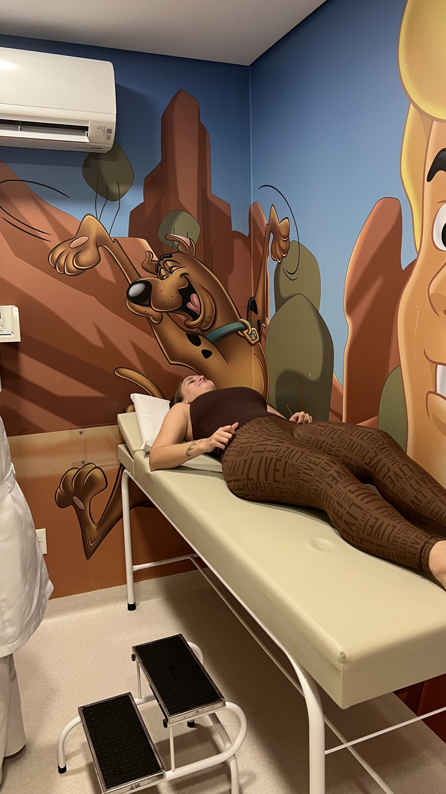

PACIENTE: JULIA
AVALIAÇÃO DE RISCO:
Toque na cadeira para acomodar a Julia
Mantenha a paciente estável! Arraste a gota 🩸 até o tubo 🧪

Naquele dia, a missão parecia simples: ir fazer um exame de sangue. Só isso. Uma coisa comum, rápida, que provavelmente passaria despercebida no meio de tantos outros dias.
Mas, quando se trata de você, até os momentos mais simples acabam ganhando um significado diferente para mim. Eu lembro que você não podia simplesmente sentar para tirar sangue, porque existia aquela possibilidade de você passar mal ou até desmaiar. Então, em vez de fazer o exame como qualquer outra pessoa, você precisou fazer de um jeito diferente. E foi assim que acabamos na sala do Scooby-Doo, com você fazendo o procedimento deitada.
E talvez seja justamente isso que eu gosto tanto nas nossas lembranças. Elas não precisam ser enormes, perfeitas ou planejadas para se tornarem importantes para mim. Às vezes, é só um exame de sangue. Uma sala diferente. Uma situação inesperada. Nós dois juntos em um momento que, para qualquer outra pessoa, talvez fosse apenas mais um dia.
Mas eu estava ali com você.
E eu gosto de estar. Gosto de poder estar perto quando você precisa. Gosto de poder cuidar, acompanhar, esperar, conversar, rir ou simplesmente ficar do seu lado. Porque, para mim, estar com você nunca foi apenas sobre estar presente nos momentos bonitos.
Eu quero estar também nos momentos estranhos, nos dias difíceis, nas situações inesperadas e até naquelas que começam com um simples "vou fazer um exame rapidinho" e terminam em uma sala do Scooby-Doo. ❤️
Talvez você nem perceba o quanto essas pequenas coisas ficam guardadas em mim. Mas ficam. Aquele dia ficou.
E quando eu penso nele hoje, eu não lembro apenas do exame. Eu lembro de você. Lembro de nós dois compartilhando mais um daqueles pequenos momentos que, sem perceber, vão construindo a nossa história.
E acho bonito pensar que, no meio de tantas coisas que poderiam ter acontecido naquele dia, uma das que mais importa para mim foi simplesmente ter estado ao seu lado.
Porque eu não quero estar com você somente quando tudo estiver perfeito. Eu quero estar quando você estiver nervosa. Quero estar quando você estiver com medo. Quero estar quando alguma coisa estiver te deixando mal. Quero estar quando você estiver feliz. Quero estar quando você estiver rindo sem conseguir parar.
Quero estar nos dias tranquilos e também nos dias complicados. Quero ser aquela pessoa que você olha e pensa: "ele está aqui."
Porque, no final, talvez seja isso que eu mais quero te oferecer: a certeza de que você nunca precisa enfrentar tudo sozinha enquanto eu puder estar ao seu lado.
"Como a importância que você tem para mim."
Obrigado por deixar eu estar ao seu lado até nos momentos em que você mais precisa. ❤️
E é engraçado pensar que uma simples coleta de sangue conseguiu virar uma lembrança tão bonita para mim. Não pelo exame. Não pela sala. Nem pelo Scooby-Doo.
Mas porque naquele momento eu estava com você.
E se existe alguma coisa que eu aprendi desde que você entrou na minha vida, é que são justamente esses pequenos momentos que acabam se tornando os mais importantes.
Talvez daqui a muito tempo a gente nem lembre exatamente de todos os detalhes daquele dia. Mas eu espero lembrar sempre da sensação de estar ali com você. De saber que, mesmo em uma situação simples, eu queria estar perto.
De perceber que cuidar de você não parece uma obrigação. Parece exatamente onde eu quero estar.
E talvez nenhum exame consiga medir isso.
Nenhuma máquina consegue colocar em números o carinho que eu sinto por você. Nenhum resultado consegue mostrar o tamanho da importância que você ganhou na minha vida.
Porque existem coisas que simplesmente não aparecem em uma tela, em uma ficha médica ou em um resultado de laboratório.
Existem coisas que a gente sente.
E eu sinto você em tantas partes da minha vida que, às vezes, até parece impossível explicar.
Você está nas minhas lembranças favoritas. Está nos momentos em que eu sorrio sozinho lembrando de alguma coisa. Está nas histórias que eu gosto de contar. Está nos dias bons. Está nos dias difíceis. Está nas pequenas coisas que, depois que acontecem, nunca mais parecem tão pequenas.
E naquele dia, em uma sala do Scooby-Doo, enquanto você fazia um exame de sangue, eu estava vivendo mais uma dessas pequenas coisas que eu quero guardar para sempre.
Mais uma lembrança nossa. Mais um momento em que eu pude estar perto de você. Mais um pedacinho da nossa história.
E se eu pudesse escolher novamente, mesmo sabendo de tudo, eu escolheria estar ali outra vez.
Porque quando a pessoa que eu amo precisa de alguém ao lado, eu quero ser essa pessoa. Sempre que eu puder.
E talvez essa seja a verdadeira coisa que aquele exame revelou.
Não alguma coisa sobre o seu sangue. Mas alguma coisa sobre nós.
Revelou o quanto eu gosto de cuidar de você. O quanto eu gosto de estar perto. O quanto momentos simples com você conseguem se transformar em memórias que significam muito para mim.
E revelou, mais uma vez, uma coisa que eu já sei há muito tempo:
Eu amo ter você na minha vida. ❤️
Obrigado por cada pequena lembrança que você, mesmo sem perceber, ajuda a construir comigo. Obrigado por cada momento em que você me deixa estar perto. Obrigado por ser você.
Eu amo você, minha princesa. ❤️